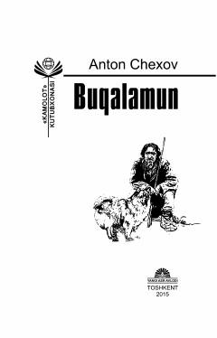

BAnton Chexovning jamiyatdagi illatlarni fosh etuvchi mashhur hajviy hikoyalar to'plami.
Ushbu to'plam mashhur rus yozuvchisi Anton Chexovning o'zbek tiliga tarjima qilingan hikoyalarini o'z ichiga oladi. Asarlar insoniy illatlar, jamiyatdagi ijtimoiy tengsizlik va xulq-atvor masalalarini hajviy yo'l bilan yoritib beradi.